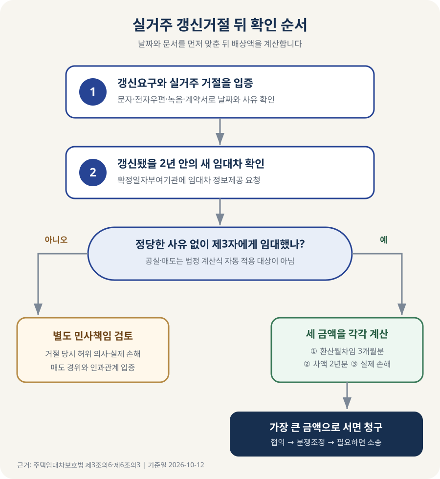

실거주라며 갱신을 거절한 집주인이 새 세입자를 들였다면?
임차인이 계약갱신요구권을 행사했는데 집주인이 본인이나 직계존속·직계비속의 실거주를 이유로 거절한 뒤, 갱신됐을 2년이 끝나기 전에 정당한 사유 없이 다른 사람에게 다시 임대했다면 손해배상을 청구할 수 있습니다. 당사자가 배상액을 따로 합의하지 않았다면 법이 정한 세 금액, 즉 ① 거절 당시 환산월차임 3개월분, ② 새 임대차와 갱신됐을 계약의 환산월차임 차액 2년분, ③ 실제 손해액 중 가장 큰 금액이 기준입니다. 다만 집이 비어 있거나 매도됐다는 이유만으로 이 계산식이 자동 적용되지는 않습니다.
먼저 ‘갱신요구 → 실거주 거절 → 제3자 임대’를 확인하세요
주택임대차보호법은 임차인이 계약 종료 6개월 전부터 2개월 전까지 계약갱신을 요구하면 임대인이 정당한 사유 없이 거절하지 못하도록 합니다. 임차인은 이 권리를 한 차례 행사할 수 있고, 갱신되는 기간은 2년입니다. 집주인 본인이나 집주인의 부모·조부모·자녀·손자녀가 실제로 들어와 살려는 경우는 법이 인정하는 거절 사유 가운데 하나입니다.
문제는 그 설명으로 임차인을 내보낸 뒤 더 높은 보증금이나 월세를 받고 새 세입자를 들이는 경우입니다. 주택임대차보호법 제6조의3 제5항은 갱신됐을 기간이 끝나기 전에 집주인이 정당한 사유 없이 제3자에게 다시 임대한 경우 손해를 배상하도록 정합니다. 여기서 ‘갱신됐을 기간’은 통상 기존 계약 종료 다음 날부터 2년입니다.
따라서 다음 네 가지를 날짜와 자료로 정리해야 합니다.
| 확인할 사실 | 왜 중요한가 | 남길 자료 |
|---|---|---|
| 갱신요구권을 행사했는가 | 단순히 계속 살고 싶다고 협의한 것과 법정 갱신요구는 다툼이 생길 수 있습니다 | 문자·전자우편·내용증명, 통화녹음 |
| 집주인이 실거주를 이유로 거절했는가 | 법정 손해배상 규정은 제6조의3 제1항 제8호의 거절과 연결됩니다 | 집주인 답변, 중개사 전달 내용, 갱신거절 통지서 |
| 언제 퇴거하고 기존 계약이 끝났는가 | 제3자 임대를 확인할 2년의 시작과 끝을 정합니다 | 기존 계약서, 보증금 반환일, 전출·열쇠 인도 기록 |
| 보호기간 안에 새 임대차가 있었는가 | 법정 계산식 적용 여부와 차임 차액을 판단합니다 | 확정일자 부여현황, 새 계약의 보증금·월세·기간 |
계약 종료 전에 집주인이 먼저 나가 달라고 했고 임차인이 보상금을 받고 합의해지했다면 상황이 달라질 수 있습니다. 계약갱신요구권을 행사하지 않았거나 이미 한 차례 모두 사용한 경우, 임차인의 차임 연체 등 다른 적법한 거절 사유가 있었던 경우도 제6조의3 제5항의 전형적인 청구와 같다고 단정하기 어렵습니다.
새 세입자는 소문보다 ‘임대차 정보제공’으로 확인하세요
이사한 집의 초인종을 누르거나 새 입주자를 찾아가 계약서를 보여 달라고 요구할 필요는 없습니다. 법은 실거주 사유로 갱신을 거절당한 종전 임차인을 임대차 정보 제공을 요청할 수 있는 이해관계인에 포함합니다. 주택임대차보호법 제3조의6과 같은 법 시행령 제5조가 근거입니다.
확정일자부여기관은 읍·면사무소, 동 주민센터, 시·군·구 출장소, 지방법원과 지원·등기소 등입니다. 종전 임차인은 갱신됐을 기간 중 존속하는 임대차계약의 확정일자 부여일, 차임과 보증금, 임대차기간 등을 열람하거나 서면으로 교부받을 수 있습니다. 실제 신청 창구와 구비서류는 기관별로 확인하되 보통 신분증, 종전 임대차계약서, 갱신요구와 실거주 거절을 보여 주는 자료를 준비하는 것이 좋습니다.
주민등록 전입세대 확인은 아무나 자유롭게 열람하는 자료가 아니며 신청 자격과 증명서류가 따로 있습니다. 이 글의 상황에서는 먼저 종전 임차인에게 법이 명시적으로 허용한 확정일자·임대차 정보제공 절차를 이용하는 편이 분명합니다.

집이 비어 있거나 팔렸다면 같은 계산식을 바로 쓰기 어렵습니다
집주인이 약속과 달리 입주하지 않았다는 사실은 의심할 만한 사정입니다. 그러나 제6조의3 제5항의 문구는 보호기간 안에 정당한 사유 없이 제3자에게 임대한 경우를 손해배상 대상으로 정합니다. 집이 계속 비어 있거나 제3자에게 매도된 경우에는 ‘새 임대차’가 없으므로 같은 조 제6항의 세 가지 법정 금액이 자동 적용된다고 단정할 수 없습니다.
그렇다고 공실이나 매도면 어떤 책임도 없다는 뜻은 아닙니다. 거절 당시부터 실제 거주 의사가 없었는데 거짓 설명으로 갱신요구권을 침해했다면 민법상 불법행위 등 별도 청구가 문제 될 수 있습니다. 이때는 거절 당시의 진짜 의사, 매도 경위, 실제 손해와 인과관계를 개별적으로 입증해야 하므로 법정 계산식이 적용되는 제3자 임대 사건보다 판단이 복잡합니다.
반대로 집주인이나 거주 예정이던 직계가족이 사망하거나 예상하기 어려운 사정으로 입주할 수 없게 되는 등 ‘정당한 사유’가 있다면 제3자에게 임대했더라도 배상책임이 인정되지 않을 수 있습니다. 단지 새 임대차계약이 있다는 사실만 보고 결론 내리지 말고, 집주인이 내세우는 사유가 거절 뒤 발생했는지와 이를 뒷받침하는 자료를 확인해야 합니다.
| 확인된 상황 | 법정 손해배상 계산식 | 추가 검토 |
|---|---|---|
| 2년 안에 정당한 사유 없이 제3자에게 임대 | 제6조의3 제5·6항 적용을 검토합니다 | 새 보증금·월세·계약기간, 실제 손해 |
| 집주인 또는 직계가족이 실제 입주 | 원칙적으로 해당하지 않습니다 | 실제 거주 시작과 지속 여부 |
| 집이 계속 공실 | 세 가지 금액이 자동 적용되지는 않습니다 | 거절 당시 허위 의사와 별도 손해 입증 |
| 제3자에게 매도 | ‘제3자 임대’ 규정의 직접 적용은 별도 쟁점입니다 | 부당 거절에 따른 민사책임, 매도 경위 |
| 예상하기 어려운 사정 뒤 제3자 임대 | 정당한 사유가 인정되는지 다툴 수 있습니다 | 사유의 발생 시점과 객관적 자료 |
합의가 없다면 세 금액을 각각 구해 가장 큰 값을 봅니다
당사자가 갱신거절 당시 배상액을 미리 합의했다면 우선 그 합의를 확인합니다. 별도 합의가 없다면 제6조의3 제6항은 아래 세 금액 중 큰 금액을 손해배상액으로 정합니다.
- 거절 당시 환산월차임 3개월분: 월세에 보증금을 월세로 바꾼 금액을 더한 뒤 3개월을 곱합니다.
- 환산월차임 차액의 2년분: 새 세입자에게 받은 환산월차임에서 갱신거절 당시 환산월차임을 뺀 뒤 24개월을 곱합니다.
- 실제 손해액: 부당한 갱신거절 때문에 생긴 이사비, 중개보수, 새집 차임 증가 등 인과관계를 입증할 수 있는 손해를 합산합니다.
전세처럼 월세가 없어도 보증금을 환산월차임으로 바꿔야 합니다. 환산할 때는 주택임대차보호법 제7조의2의 두 비율, 즉 연 10%와 한국은행 기준금리에 대통령령이 정한 2%를 더한 비율 중 낮은 비율을 씁니다. 기준금리는 바뀔 수 있으므로 갱신거절 당시 적용 비율을 확인해야 합니다.
두 번째 금액의 비교 대상은 ‘예전 계약과 새 계약의 보증금 차이’ 자체가 아닙니다. 보증금과 월세를 같은 월 단위 금액으로 환산해 비교합니다. 새 계약의 보증금은 낮아졌지만 월세가 크게 올랐거나, 갱신됐다면 보증금·차임이 적법하게 조정됐을 사정이 있다면 계약서와 당사자 합의를 기준으로 다시 계산해야 합니다.
전세보증금이 3억원에서 4억원으로 올랐다면
계산 방법을 보기 위한 가정입니다. 기존 전세계약의 보증금은 3억원, 월세는 0원이고, 실거주 거절 뒤 집주인이 새 세입자와 보증금 4억원·월세 0원으로 계약했습니다. 설명을 단순하게 하기 위해 갱신거절 당시 적용 환산율을 연 4.5%라고 가정하겠습니다. 실제 사건에서는 당시 법정 비율을 다시 확인해야 합니다.
| 계산 항목 | 계산 | 금액 |
|---|---|---|
| 기존 계약 환산월차임 | 3억원 × 4.5% ÷ 12개월 | 112만5천원 |
| ① 기존 환산월차임 3개월분 | 112만5천원 × 3개월 | 337만5천원 |
| 새 계약 환산월차임 | 4억원 × 4.5% ÷ 12개월 | 150만원 |
| ② 차액 2년분 | (150만원 − 112만5천원) × 24개월 | 900만원 |
| ③ 입증 가능한 실제 손해 | 이사비·중개보수·새집 비용 증가 합계라고 가정 | 520만원 |
| 세 금액 중 큰 금액 | 337만5천원, 900만원, 520만원 비교 | 900만원 |
이 예에서는 900만원이 기준이 됩니다. 하지만 실제 손해가 1,200만원으로 입증된다면 세 번째 금액이 가장 커질 수 있습니다. 새 계약이 2년보다 짧거나 중간에 해지됐다는 사정, 보증금과 월세 외의 비용, 종전 임차인이 이미 받은 이사 합의금 등은 구체적인 사건에서 다툼이 될 수 있으므로 표의 숫자를 그대로 청구서에 옮기면 안 됩니다.
의심되는 날부터 이렇게 정리하세요
- 날짜표를 만듭니다. 기존 계약 만료일, 갱신요구일, 실거주 거절일, 퇴거·보증금 반환일을 한 장에 적습니다.
- 원본 증거를 보관합니다. 문자 캡처만 남기지 말고 대화 전체, 전자우편 원문, 통화녹음, 계약서와 송금내역을 함께 보관합니다.
- 등기부를 다시 봅니다. 소유자가 바뀌었는지, 거절 뒤 근저당이나 매매가 있었는지 확인합니다. 소유권 변동은 제3자 임대와 다른 쟁점입니다.
- 임대차 정보제공을 요청합니다. 확정일자부여기관에 종전 계약서와 갱신요구·거절 자료를 제시하고 보호기간 중 새 계약의 정보를 확인합니다.
- 세 금액을 따로 계산합니다. 당시 환산율, 기존·신규 보증금과 월세, 실제 지출 영수증을 기준으로 표를 만듭니다.
- 서면으로 설명과 지급을 요구합니다. 확인된 사실, 법적 근거, 청구액과 계산표, 답변·지급 기한을 적어 도달이 남는 방법으로 보냅니다.
- 합의가 안 되면 조정을 검토합니다. 주택임대차분쟁조정위원회는 국토교통부 산하 한국부동산원과 LH 등이 운영하는 임대차 분쟁 조정 창구입니다. 계약서와 증거, 계산표를 갖춰 신청할 수 있습니다.
손해배상청구에는 소멸시효 문제가 있고, 집주인이 제시하는 정당한 사유와 실제 손해에 따라 결과가 달라질 수 있습니다. 제3자 임대를 확인했다면 오랫동안 기다리지 말고 자료를 갖춰 법률상담이나 조정 절차를 검토하세요.
지급요구서에는 사실과 계산을 나눠 적으세요
첫 문단에는 종전 계약의 주소·기간과 갱신요구일, 집주인이 실거주를 이유로 거절한 날짜, 퇴거일을 시간순으로 적습니다. 다음 문단에는 정보제공 결과 확인된 새 계약의 기간·보증금·월세를 씁니다. 마지막에는 법정 세 금액의 계산표와 그중 큰 금액, 지급받을 계좌와 기한을 적고 근거자료 목록을 붙입니다. “거짓말했으니 위자료를 달라”는 표현만 쓰는 것보다 어떤 법정 요건이 충족되고 청구액이 어떻게 나왔는지 보여 주는 편이 협의와 조정에 도움이 됩니다.
등기부의 소유자와 갱신거절 당시 임대인이 같은지도 확인하세요. 집이 공유라면 계약서상 임대인, 갱신거절을 통지한 사람, 새 계약을 맺은 사람의 관계를 정리해야 합니다. 소유권이 넘어갔다면 매도 전후 어느 시점에 누가 임대인 지위를 가졌고 새 임대차를 맺었는지가 쟁점이 될 수 있습니다. 확정일자 정보의 날짜만 보고 상대방을 잘못 특정하면 지급요구와 이후 절차가 헛돌 수 있습니다.
실제 손해를 계산할 때는 새집 보증금 전액을 손해로 넣지 않습니다. 돌려받은 종전 보증금과 새 보증금의 자금 이동, 추가 대출이자, 이사비와 중개보수, 임시숙박비 등이 갱신거절 때문에 추가로 발생했는지 항목별로 연결해야 합니다. 새집의 면적·지역·조건이 크게 달라 비용이 늘었다면 그 차이가 모두 갱신거절 때문인지 다툼이 생길 수 있으므로 계약 당시 비교자료와 선택 경위도 함께 남겨 두는 편이 좋습니다.
자주 묻는 질문
집주인이 2년을 채워 실제 거주해야 하나요?
법은 집주인에게 ‘반드시 2년 거주하라’는 문장보다, 갱신됐을 기간이 끝나기 전에 정당한 사유 없이 제3자에게 임대하면 배상하도록 정하는 방식으로 규율합니다. 실제 거주기간이 짧다는 사실만으로 결론이 정해지지는 않지만, 곧바로 새 세입자를 들였다면 새 계약 시점과 정당한 사유를 확인해야 합니다.
새 세입자의 이름도 받을 수 있나요?
종전 임차인이 요청할 수 있는 정보 범위는 시행령과 정보제공 규칙에 따릅니다. 손해액 계산에 필요한 확정일자, 보증금·월세와 임대차기간을 중심으로 요청하고, 새 임차인의 개인정보를 온라인에 공개하거나 압박 목적으로 사용해서는 안 됩니다.
집주인이 부모님이 들어오려다 사정이 바뀌었다고 합니다
처음부터 거짓말이었다고 단정하기보다 어떤 사정이 언제 생겼는지 자료를 확인해야 합니다. 갱신거절 뒤 예상하기 어려운 사유가 생겼다면 ‘정당한 사유’가 쟁점이 됩니다. 구두 설명만으로 끝내지 말고 새 임대차 정보와 집주인의 소명 자료를 토대로 판단하세요.
이사비 영수증을 잃어버렸습니다
영수증이 없으면 실제 손해액 입증이 어려워질 수 있지만 법정 금액의 다른 두 기준까지 사라지는 것은 아닙니다. 계좌이체 내역, 중개보수 현금영수증, 새 임대차계약서 등 남아 있는 자료를 모아 세 금액을 각각 계산하세요.
공식 자료
- 국가법령정보센터 — 주택임대차보호법 제6조의3(계약갱신 요구 등)
- 국가법령정보센터 — 주택임대차보호법 제3조의6(확정일자 부여 및 임대차 정보제공 등)
- 국가법령정보센터 — 주택임대차보호법 시행령 제5조(이해관계인의 범위)
- 국가법령정보센터 — 주택임대차보호법 시행령 제6조(정보의 범위 및 제공방법)
- 국가법령정보센터 — 주택임대차보호법 제7조의2(월차임 전환 시 산정률의 제한)
- 법제처 찾기쉬운 생활법령 — 임대차계약의 갱신
- 주택임대차분쟁조정위원회 — 허위 갱신거절 손해배상 조정사례
정보 기준일: 2026-10-12. 이 글은 실거주 사유의 갱신거절 뒤 제3자 임대가 확인된 경우의 일반적인 법정 요건과 계산 순서를 설명합니다. 공실·매도·정당한 사유, 갱신요구의 적법성, 별도 합의와 실제 손해에 따라 결론이 달라질 수 있습니다. 법령과 환산율은 청구 시점에 다시 확인하고, 청구액 확정이나 소송 제기 전에는 계약서 원문과 증거를 바탕으로 개별 법률상담을 받으세요.
계약과 비용을 다시 확인하세요
- 전세계약 체크리스트계약서·특약·확정일자 자료 확인
- 이사 체크리스트퇴거일 자료와 비용 증빙 정리